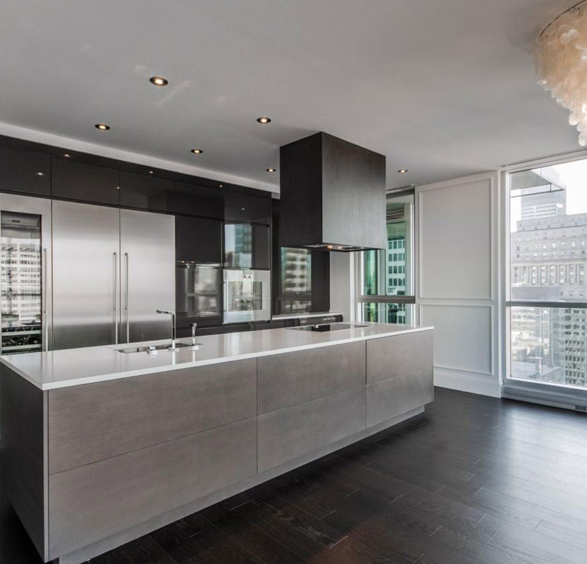

Located in Montreal, Derrig & Talbot is a full service design-build construction firm. We offer a broad range of services in a range of key sectors: commercial offices, government, leisure, retail, education, healthcare, residential for developers and private homes. As a general contractor, we tackle a wide range of projects from new construction to rehabbing or restoring existing building to fit out of interior spaces.
We carefully manage each development and guide clients through every stage. We’ve built all of our processes around simplicity, transparency and common sense. We provide regular and accurate reports that establish a clear snapshot of the exact status of the project. These reports include a detailed work calendar establishing schedules for each sub-contractor. We pride ourselves in delivering projects within very strict timetables. In addition to on-site projects managers, our directors are heavily involved in each project.
We work hard to combine client requirements with functional design and work with the best architects and design firms in Canada. We are committed to delivering excellent value and achieving client’s vision through innovation in construction, program and cost.